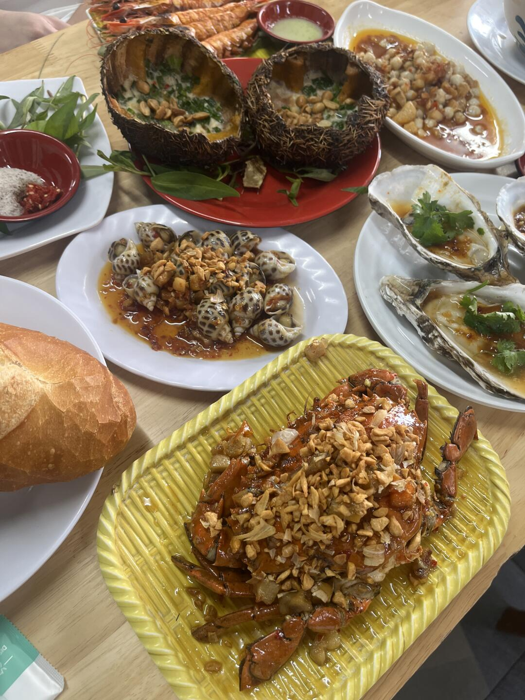
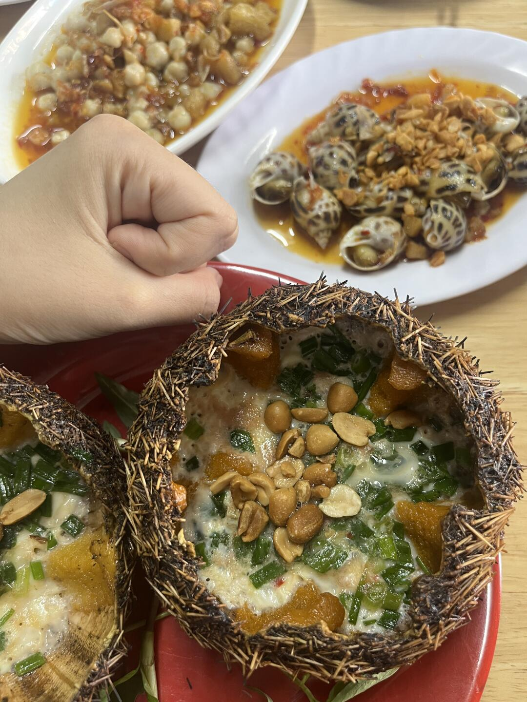
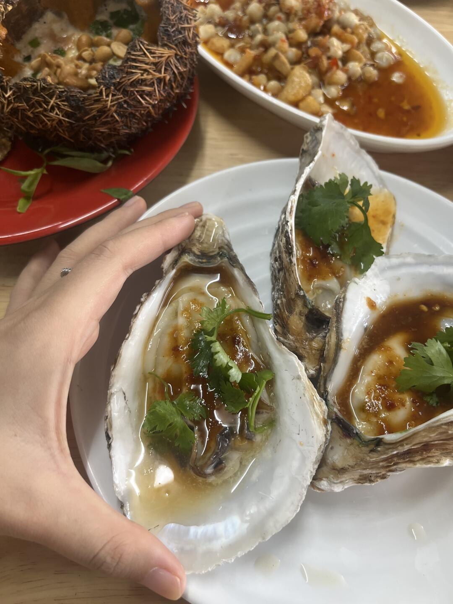
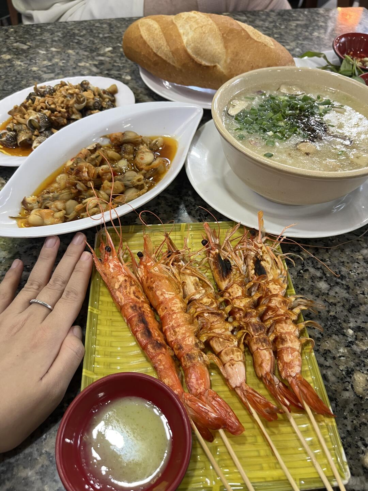
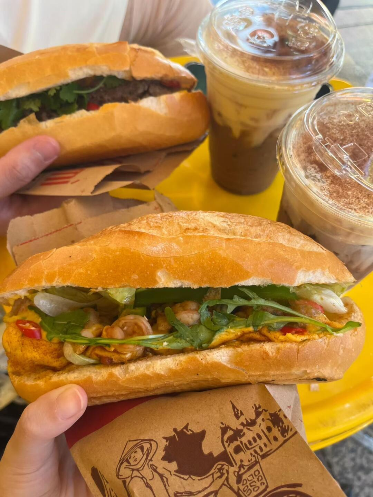
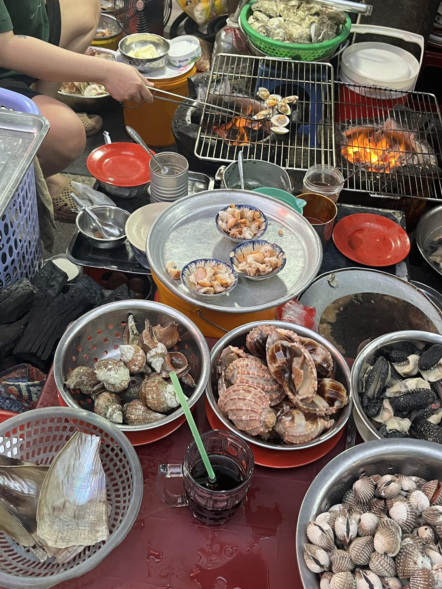
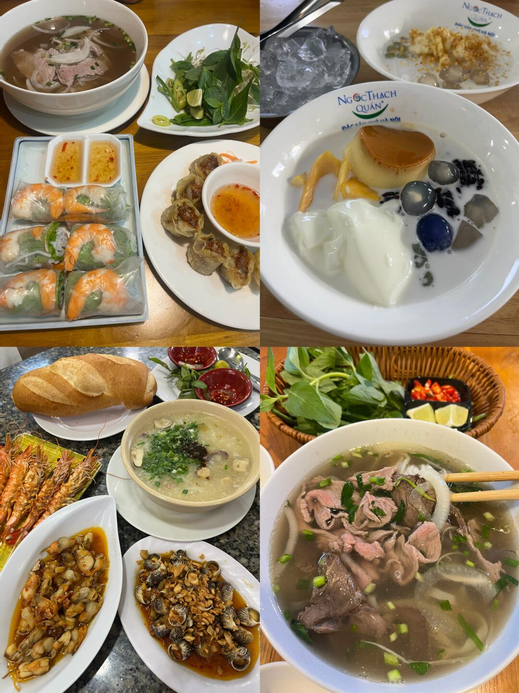
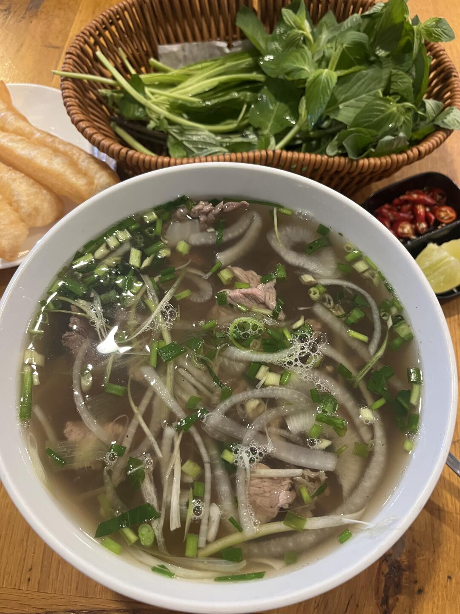

美食筆記 · 來自 Obsidian · 2026-08-19 擷取
这家餐厅让我对胡志明🇻🇳念念不忘

- 店名：Ốc Đào（OC DAO）— 海鮮/螺類餐廳
- 地址：212B/D48 Nguyễn Trãi, Cầu Ông Lãnh, Hồ Chí Minh
- 營業時間：每日 11:00 – 22:15
- 評分：4.2 星（2411 則評論）
- 電話：+84909437033
- 網站：ocdaonguyentrai.com
1️⃣ 連續兩天吃 OC DAO——作為海邊人對海鮮有極高的要求，這家店的每道海鮮都很鮮甜、個頭巨大，也是讓我開眼界了。就跟著 1-4 圖片點，保證不踩雷！
⚠️ 點這麼多才 兩三百人民幣！
2️⃣ 不會吃豬肝？點圖 5 法棍🥖！每天的早餐，還特地帶到機場吃，現在想到還在分泌口水🤤
越南菜真的好符合我的口味呀！每頓都是減脂餐！
- 🦀 蒜蓉炒蟹：蟹身油亮、撒滿蒜碎
- 🥚 海膽殼蒸蛋：蛋液＋蔥花＋花生碎
- 🦪 生蠔：淋醬汁＋香菜，新鮮飽滿
- 🍢 烤大蝦串：竹籤串、烤至焦褐
- 🐚 炒螺／點點螺：帶醬汁、撒花生碎
- 🥥 椰子燉品：兩個椰子殼裝
- 🥖 法棍三明治：蝦/雞肉/牛肉餡料＋蔬菜，配奶蓋冰飲
胡志明海鮮名店 Ốc Đào（OC DAO）：蒜蓉炒蟹、海膽蒸蛋、烤蝦串個頭巨大又鮮甜，點滿一桌才兩三百人民幣；法棍三明治是每日早餐、好吃到帶去機場吃！
📸 實拍（共 8 張）







📌 資料來源：內容與全部 8 張照片來自小紅書實地帖文（Pebble 擷取至 Obsidian，2026-08-19）。
營業時間、價格與電話可能變動，出發前建議以現場或官方最新資訊為準。